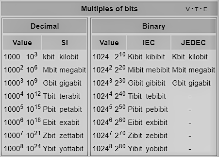

The internet was made for sending information from place to place. To do this, the internet uses bits, which make up information. This information is made up of ones and zeroes, also known as binary code.
Bits are sent with radio waves, light, and electricity. The speed at which bits are sent at is called bit rate, or the number of bits which can be sent to a receiver over a specified period of time. Bit rate is a part of bandwidth, or the ultimate number of bits that can be sent from a device.